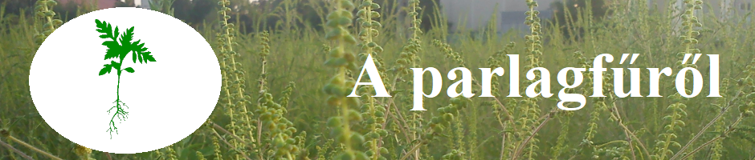

|  |
|---|
FejlődéseMagról kelő, egynyári növény. Ősszel a magok beérése után, illetve az első fagyok alkalmával elpusztul. Jellemző rá a dormancia, a friss termés nem kel ki a tél beköszönte előtt. A nyugalmi periódusa január végéig tart, amikortól már csírázásra kész termés, csak a felmelegedésre vár. A talaj felső 3 cm-es rétegében nyugvó magok indulnak csírázásnak. A mélyebben fekvő magok 3-4 évtizedig is nyugalomban maradnak, így biztosított a talajok hosszú távú fertőzöttsége. Ha a talajt megbolygatják, a felszín alá került magok csírázásnak indulnak. Magyarországon március végén kezd kelni, és áprilisban tömegesen csírázik. A talaj 10-20 °C-os hőmérséklete és a napfény kedvez a csírázásának. Nyáron intenzív növekedésnek indul. Porzós virágai július elején-közepén megjelennek, a termős virágok egy-másfél héttel később. A virágok beporzását a szél végzi, a virágpor akár 100 km távolságra is el tud jutni. A virágpor szóródása leginkább július végén, augusztusban történik, ezután kisebb mennyiségben egészen a fagyok beálltáig tart. A virágpor tömegesen termelődik, a szél útján terjed. A termés érése október közepe táján kezdődik. Egy közepes növény több ezer, vagy akár több tízezer magot érlel, de 60 ezer magot is termelhet egyetlen tövön. A mag rendkívül ellenálló, akár harminc évig is csíraképes marad. |